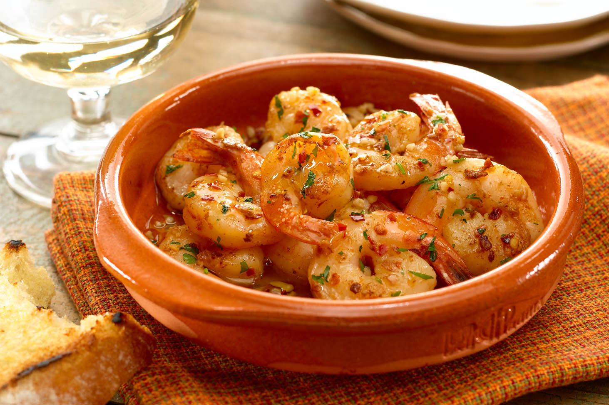

Todas las Recetas

camarones al ajillo
Ingredientes:
- 1 libra de camarones medianos, pelados y desvenados
- 1/4 taza de aceite de oliva
- 4 dientes de ajo picados
- 1/4 cucharadita de pimienta roja triturada (opcional)
- Sal y pimienta negra molida al gusto
- 2 cucharadas de jugo de limón fresco
- 1/4 taza de vino blanco seco
- 2 cucharadas de mantequilla sin sal
- 2 cucharadas de perejil fresco picado
Instrucciones:
- Calienta el aceite de oliva en una sartén grande a fuego medio-alto.
- Agrega los camarones y cocina por un par de minutos hasta que estén ligeramente dorados.
- Agrega el ajo y la pimienta roja triturada (opcional) y cocina por 1 minuto más.
- Agrega sal y pimienta negra al gusto.
- Agrega el jugo de limón y el vino blanco seco. Deja cocinar hasta que los camarones estén completamente cocidos y el líquido se haya reducido a la mitad.
- Agrega la mantequilla y mezcla bien.
- Sirve los camarones en platos individuales y espolvorea con perejil fresco picado.
¡Buen provecho!
alitas
Ingredientes:
- 2 libras de alitas de pollo
- 1/4 taza de salsa de soja
- 1/4 taza de miel
- 1/4 taza de ketchup
- 2 cucharadas de aceite de oliva
- 1 cucharada de vinagre de manzana
- 2 dientes de ajo picados
- Sal y pimienta negra molida al gusto
- 1 cucharada de semillas de sésamo (opcional)
Instrucciones:
- Precalienta el horno a 200°C.
- Lava las alitas de pollo y sécalas con papel de cocina.
- En un tazón grande, mezcla la salsa de soja, la miel, el ketchup, el aceite de oliva, el vinagre de manzana y el ajo picado.
- Agrega sal y pimienta negra al gusto.
- Agrega las alitas de pollo a la mezcla y revuelve bien para cubrir completamente.
- Coloca las alitas en una bandeja para hornear y hornea por 30-35 minutos, volteando las alitas a la mitad del tiempo de cocción.
- Si deseas, espolvorea las alitas con semillas de sésamo durante los últimos 5 minutos de cocción.
- Sirve las alitas de pollo calientes y disfruta.
platano caramelizado
Ingredientes:
- 4 plátanos maduros, pelados y cortados en rodajas diagonales
- 1/4 taza de azúcar morena
- 2 cucharadas de mantequilla sin sal
- 1/2 cucharadita de canela molida (opcional)
Instrucciones:
- En una sartén grande, derrite la mantequilla a fuego medio-alto.
- Agrega las rodajas de plátano y cocina durante 2-3 minutos por cada lado, hasta que estén doradas.
- Espolvorea el azúcar morena sobre los plátanos y revuelve bien.
- Cocina durante 2-3 minutos más, revolviendo ocasionalmente, hasta que el azúcar se haya derretido y forme un caramelo.
- Si deseas, agrega la canela molida y mezcla bien.
- Sirve los plátanos caramelizados calientes, como postre o como acompañamiento de tu plato favorito.
¡Que los disfrutes!
pastel de tres leches
Ingredientes:
- 1 1/2 taza de harina de trigo
- 1 cucharadita de polvo de hornear
- 1/2 taza de mantequilla sin sal, a temperatura ambiente
- 1 taza de azúcar granulada
- 5 huevos grandes
- 1/2 taza de leche entera
- 1 lata de leche evaporada (12 oz)
- 1 lata de leche condensada (14 oz)
- 1 taza de crema de batir
- 1 cucharadita de esencia de vainilla
Instrucciones:
- Precalienta el horno a 180°C.
- En un tazón mediano, tamiza la harina de trigo junto con el polvo de hornear.
- En otro tazón, bate la mantequilla con el azúcar hasta que esté cremosa y suave.
- Agrega los huevos uno por uno, batiendo bien después de cada adición.
- Agrega la mezcla de harina y bate hasta que esté bien combinada.
- Agrega la leche y mezcla hasta que esté suave.
- Vierte la mezcla en un molde para hornear previamente engrasado y enharinado.
- Hornea durante 30-35 minutos o hasta que el pastel esté dorado y un palillo insertado en el centro salga limpio.
- En un tazón grande, mezcla la leche evaporada, la leche condensada, la crema de batir y la esencia de vainilla.
- Con un tenedor, pincha el pastel varias veces en la superficie y luego vierte lentamente la mezcla de tres leches sobre el pastel, asegurándote de que se absorba bien.
- Refrigera el pastel durante al menos 2 horas, o durante toda la noche, antes de servir.
- Sirve el pastel de tres leches bien frío y disfruta.

tacos al pastor
Ingredientes:
- 1 kg de carne de cerdo en trozos pequeños (preferiblemente pierna)
- 1 piña madura pelada y cortada en rodajas
- 1 cebolla blanca en rodajas finas
- 1 manojo de cilantro fresco picado
- 20 tortillas de maíz
- 1/2 taza de jugo de naranja
- 1/4 taza de vinagre de manzana
- 1/4 taza de aceite de oliva
- 1 cucharada de achiote en pasta
- 1 cucharada de comino molido
- Sal y pimienta al gusto
Instrucciones:
- En un tazón grande, mezcla el jugo de naranja, el vinagre de manzana, el aceite de oliva, el achiote en pasta, el comino molido, la sal y la pimienta para hacer la marinada.
- Agrega la carne de cerdo en trozos pequeños y mezcla bien para cubrir con la marinada. Deja marinar durante al menos 2 horas, o toda la noche si es posible.
- Precalienta el horno a 180°C. Coloca los trozos de carne marinada en una bandeja para hornear y hornea durante 30-40 minutos, o hasta que estén dorados y cocidos por completo.
- En un sartén grande, calienta un poco de aceite a fuego medio-alto. Agrega las rodajas de piña y cocina durante 2-3 minutos por cada lado, hasta que estén doradas y caramelizadas.
- Calienta las tortillas de maíz en un sartén o plancha caliente.
- Arma los tacos al pastor colocando una porción de carne de cerdo en cada tortilla, seguida de rodajas de piña, cebolla y cilantro picado.
- Sirve los tacos al pastor calientes y disfruta.